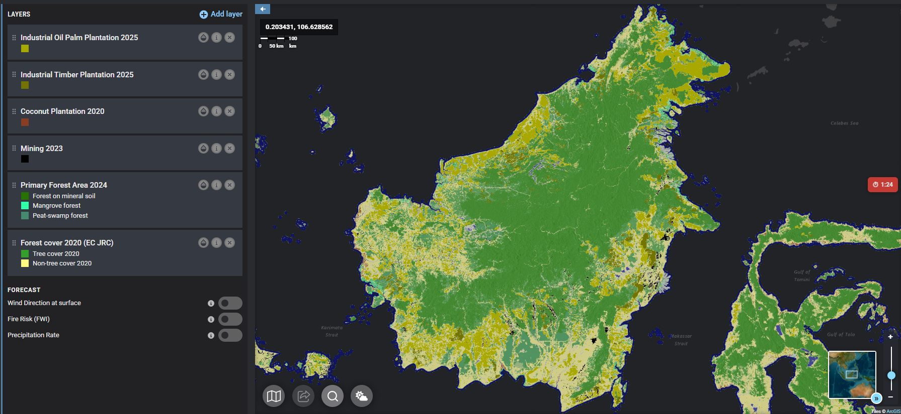
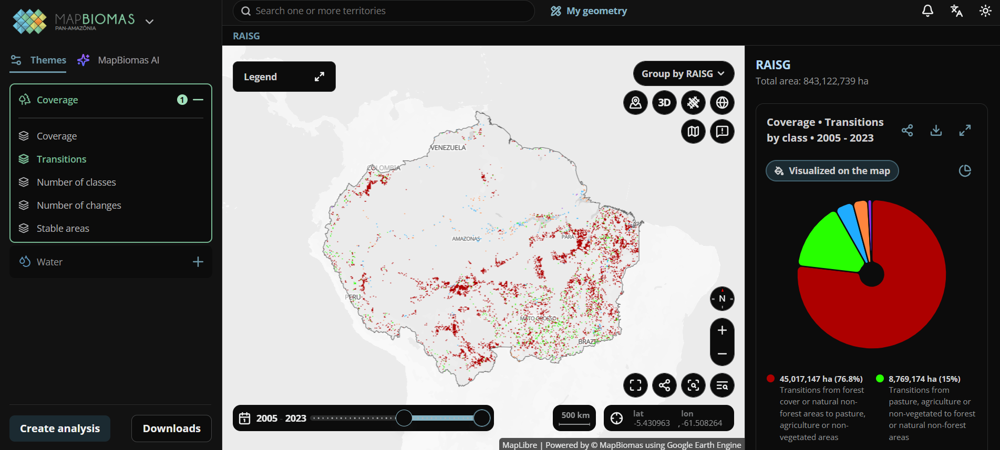

What each study area holds and what El Niño does to it. Choose one to try the fire simulator.
El Niño creates conditions for fire, but climate alone cannot explain why forests burn.
Across the Amazon and Borneo, forest conversion, agricultural expansion, logging, and infrastructure development reshape landscapes and their vulnerability to wildfire.
Drought and wind influence how fires spread, while land-use practices, ignition sources, and governance shape where fires begin and how they are managed.
Comparing these regions requires looking beyond climate anomalies to the political and economic processes transforming tropical forests.
Explore how the Oceanic Niño Index (ONI) relates to satellite-detected fire hotspots in the Amazon and Borneo. Temporal association does not establish causation.
Sources: NOAA Climate Prediction Center (ONI); NASA FIRMS MODIS Collection 6.1 (fire hotspots). Regional hotspot counts are not normalized by area.
| Dimension | Amazon | Borneo |
|---|---|---|
| Climate | Seasonal drought and ENSO-related variability | ENSO-related drought and peatland drying |
| Land transformation | Cattle ranching, agricultural expansion, and logging | Oil palm, timber plantations, logging, and peat drainage |
| Human ignition | Land clearing, agricultural burning, and accidental fires | Land preparation fires and accidental ignition |
| Research question | How does land conversion change fire vulnerability? | How does peat drainage change fire vulnerability? |
Exploratory comparative framework. These are general regional patterns and research questions, not findings established by the current simulation.

Explore monthly satellite-detected fire hotspots in Borneo from 2005 to 2025. Compare seasonal fire activity across years, including periods associated with El Niño and non-El Niño conditions.
Source: NASA FIRMS, MODIS Collection 6.1. Monthly hotspot counts from the project's existing dataset. Hotspots are satellite detections, not individual fires or burned area.

Explore monthly satellite-detected fire hotspots in the Amazon from 2005 to 2025. Compare seasonal fire activity across years, including periods associated with El Niño and non-El Niño conditions.
Source: NASA FIRMS, MODIS Collection 6.1. Monthly hotspot counts from the project's existing dataset. Hotspots are satellite detections, not individual fires or burned area.
Click a point on the map to start a fire and watch it spread with the season, wind and drought of the month you pick.